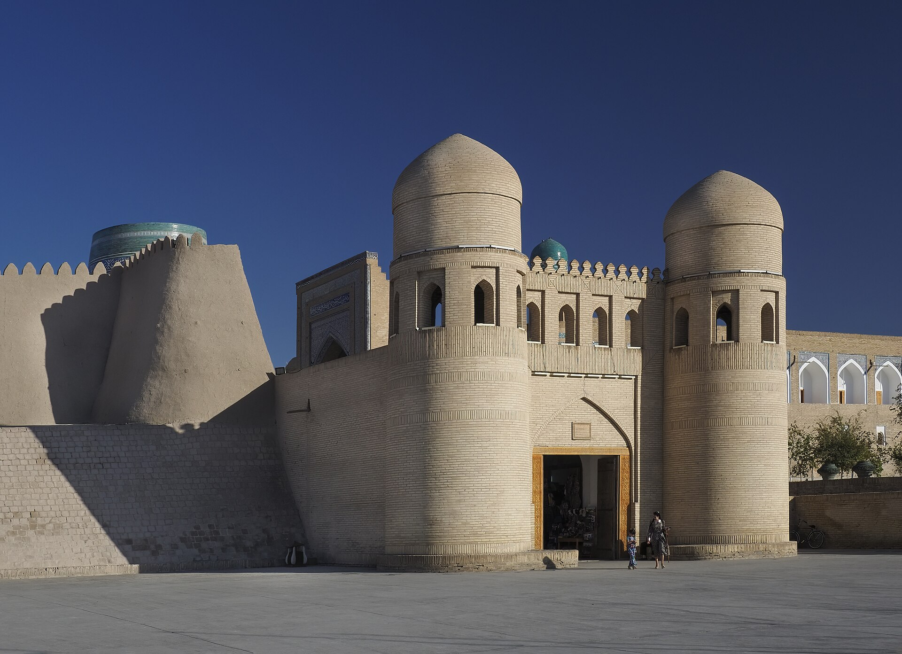

Открыт прямой авиарейс Алматы — Ургенч: путь до Хивы стал короче
С 3 сентября FlyArystan выполняет рейсы дважды в неделю. Время в пути — 2 часа 35 минут.

3 сентября 2026 года казахстанская бюджетная авиакомпания FlyArystan начала прямые перелёты между Алматы и Ургенчем. Рейсы выполняются дважды в неделю — по четвергам и воскресеньям.
Полёт выполняется на самолёте Airbus A320; время в пути составляет 2 часа 35 минут.
Почему Ургенч
Ургенч — административный центр Хорезмской области и ближайшие авиационные ворота к городу Хива. Хивинский Ичан-Кала включён в список Всемирного наследия ЮНЕСКО и считается одним из самых посещаемых исторических комплексов Центральной Азии.
Раньше, чтобы добраться из Алматы в Хорезм, пассажирам приходилось пользоваться стыковочными рейсами через Ташкент или Нукус.
- Дата начала: 3 сентября 2026 года
- Частота: 2 раза в неделю (четверг, воскресенье)
- Самолёт: Airbus A320
- Время в пути: 2 часа 35 минут
- Сезон: с сентября до конца осени, возможно продление
Рейс запланирован как сезонный: первоначальное расписание рассчитано с сентября до конца октября, при этом указано последующее продление до середины ноября и короткий второй сезон в марте 2027 года.
Региональное авиасообщение расширяется
За последние месяцы число международных рейсов в Узбекистан выросло. В августе 2026 года Etihad Airways начала ежедневные полёты по маршруту Абу-Даби — Ташкент и подписала код-шеринговое соглашение с «Узбекистон хаво йуллари». Были также запущены рейсы по маршруту Самарканд — Анталья.
14 сентября было объявлено, что регулярные рейсы по маршруту Ташкент — Хайдарабад начнутся 28 сентября.
Туристический контекст
Узбекистан развивает туризм как одно из направлений экономической диверсификации. Безвизовый режим был расширен: с 1 января 2026 года для граждан США введён безвизовый въезд на срок до 30 дней.
Казахстан же считается одним из ближайших и крупных выездных рынков для Узбекистана — между двумя странами действует безвизовый режим, а в первом полугодии 2026 года товарооборот достиг 2,8 млрд долларов.
Значение для Хорезма
Хорезмская область развивается и по другим направлениям помимо туризма: в сентябре в области полностью введена в строй солнечная электростанция «Саримай» мощностью 126 мегаватт.
При этом регион расположен вблизи зоны экологических проблем, связанных с высыханием Аральского моря; дефицит воды и деградация почв остаются долгосрочным ограничением для местной экономики.
Практическая информация
Бюджетная авиация в регионе
FlyArystan — бюджетный перевозчик, входящий в группу национальной авиакомпании Казахстана Air Astana. Он начал работу в 2019 году и за короткое время стал одной из крупнейших низкобюджетных авиакомпаний региона.
Бюджетная модель строится на парке однотипных самолётов, отдельной плате за дополнительные услуги и высокой частоте рейсов. Такая модель позволяет снижать цену.
Долгие годы авиационный рынок Центральной Азии находился в монополии государственных перевозчиков. За последние пять лет в результате политики либерализации появились новые перевозчики и маршруты.
Хива и туризм
Хивинский Ичан-Кала был включён в список Всемирного наследия ЮНЕСКО в 1990 году. Это обнесённый стеной исторический город, включающий медресе, минареты и дворцы.
Вместе с Самаркандом и Бухарой Хива образует одно из главных туристических направлений Узбекистана. Эти три города обычно объединяют в один маршрут.
Аэропорт Ургенча считается ближайшей авиационной точкой к Хиве; расстояние между ними — примерно 35 километров.
Расширение авиасообщения
В течение 2026 года число международных рейсов в Узбекистан заметно выросло. В августе Etihad Airways начала ежедневные полёты по маршруту Абу-Даби — Ташкент и подписала код-шеринговое соглашение с «Узбекистон хаво йуллари».
Были также запущены рейсы по маршруту Самарканд — Анталья. 14 сентября было объявлено, что регулярные рейсы по маршруту Ташкент — Хайдарабад начнутся 28 сентября.
Новые направления открываются и на внутреннем рынке; реализуется программа модернизации региональных аэропортов.
Визовый режим
В целях стимулирования туризма Узбекистан поэтапно либерализовал визовый режим. С 1 января 2026 года для граждан США введён безвизовый въезд на срок до 30 дней; соответствующий указ был подписан 3 ноября 2025 года.
С Казахстаном безвизовый режим действует уже много лет, и граждане двух стран могут пересекать границу даже по внутреннему паспорту.
Экономика Хорезма
Традиционная основа экономики Хорезмской области — орошаемое земледелие. Поскольку область расположена в низовьях Амударьи, она чувствительна к дефициту воды.
В сентябре в области полностью введена в строй солнечная электростанция «Саримай» мощностью 126 мегаватт; она вырабатывает примерно 252 гигаватт-часа электроэнергии в год.
Туризм же развивается как источник валютных поступлений и занятости для области: гостиницы, ремёсла и сфера услуг зависят от этого направления.
Сезонность
Рейс запланирован как сезонный. Туристический поток в Хорезм приходится в основном на весенние и осенние месяцы, поскольку летом температура в регионе очень высокая.
Расписание и цены могут меняться авиакомпанией в течение сезона; окончательную информацию рекомендуется уточнять по официальным каналам перевозчика.
Направление Казахстан — Узбекистан
Пассажиропоток между двумя странами растёт из года в год. Основную его часть составляют торговые, трудовые и семейные поездки; туристическое сообщение считается относительно новым сегментом.
В первом полугодии 2026 года товарооборот между двумя странами достиг 2,8 млрд долларов, и Казахстан стал третьим торговым партнёром Узбекистана.
На сухопутном направлении реконструируется самый загруженный пункт пропуска — «Гишткуприк» под Ташкентом; после завершения работ его суточная пропускная способность, как ожидается, вырастет с 30 до 70 тысяч человек.
Тип самолёта
Рейс выполняется на самолёте Airbus A320. Это узкофюзеляжный среднемагистральный самолёт, широко используемый бюджетными перевозчиками.
На расстоянии Алматы — Ургенч время полёта составляет 2 часа 35 минут. По сравнению со стыковочными рейсами это заметно сокращает время в пути.
Региональные аэропорты
Аэропорт Ургенча входит в число региональных аэропортов Узбекистана. В последние годы в стране проводится политика модернизации региональных аэропортов и привлечения на них международных рейсов.
Цель этой политики — направлять пассажиропоток непосредственно в регионы, а не только через Ташкент. С точки зрения туризма это важно для направлений Самарканда, Бухары и Хивы.
Маршруты Шёлкового пути
Алматы и Хива исторически расположены на разных ветвях Великого шёлкового пути. В сфере туризма идея объединить эти две точки в один маршрут в последние годы продвигается в региональных программах.
Государства Центральной Азии обсуждали также инициативу единой туристической визы; ожидается, что она позволит посещать несколько стран по одному разрешению.
Практический результат таких инициатив во многом будет зависеть от транспортной связанности — прямые рейсы считаются одним из таких связующих звеньев.
Расписание и цены рейса могут меняться авиакомпанией в течение сезона. Окончательную информацию по маршруту рекомендуется уточнять по официальным каналам перевозчика.